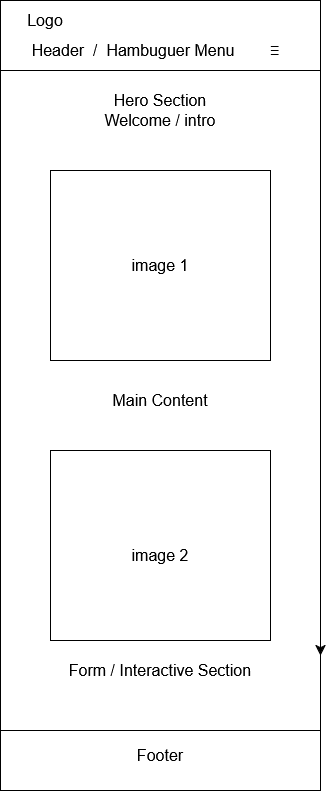
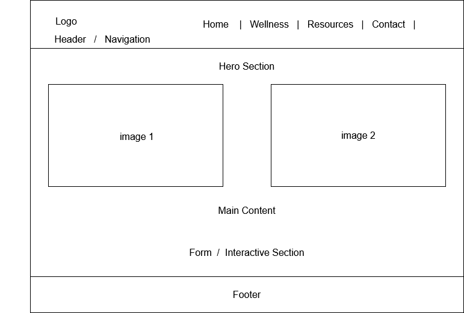

Site Name
Daily Student Wellness is the name of the website. It was chosen because it reflects the idea of taking care of students' physical and mental well-being on a daily basis in a simple accessible way.
Site Purpose
The purpose of the Daily Student Wellness website is to provide students with simple, practical, and reliable information to help them improve their overall well-being. The site will focus on topics such as stress management, mental health, healthy study habits, basic nutrition, physical activity, rest, and self-care. It will also include interactive resources and tools that help students stay organized and build healthier daily routines.
Scenarios
- How can I manage stress and anxiety while balancing classes, homework, and personal life?
- What are some simple daily habits I can follow to improve my mental and physical well-being as a student?
Color Scheme
The Daily Student Wellness website will use a calm and friendly color palette to support well-being and readability:
- Primary Color - Green (#0E2B0F): Used for headings, section titles, and important highlights.
- Secondary Color - Blue (#2196F3) Used for buttons, links, and accents to convey calmness and trust.
- Background Color - White (#FFFFFF) / Light Gray (#F5F5F5): Used for the page background to improve readability and contrast.
- Text Color - Dark Gray (#333333): Used for all paragraphs and body text for comfortable reading.
Typography
The Daily Student Wellness website will use clean and readable fonts suitable for students:
- Poppins: Used for headings and section titles because it is modern, friendly, and easy to read.
- Roboto: Used for body text and general content due to its readability on both mobile and desktop screens.
These fonts will ensure that the content is clear, approachable, and accessible for the target audience.
Wireframe
The Daily Student Wellness website will have a simple and clear layout for both mobile and desktop views:
Mobile View

- Header with site name and hamburger menu (≡).
- Hero / Introduction section.
- Image placeholder (Image 1)
- Main content section with wellness tips.
- Optional Image placeholder (Image 2).
- Interactive section / form for student engagement.
- Footer with basic information.
Desktop View

- Header with site name and horizontal navigation menu.
- Hero section
- Two image placeholders side by side (Image 1 and Image 2).
- Main content section with wellness tips.
- Interactive section / form.
- Footer with basic information.
These wireframes represent the overall structure and layout of the website, showing the relationship between content sections and images. They can be drawn in diagrams.net or similar tools to provide a visual reference.